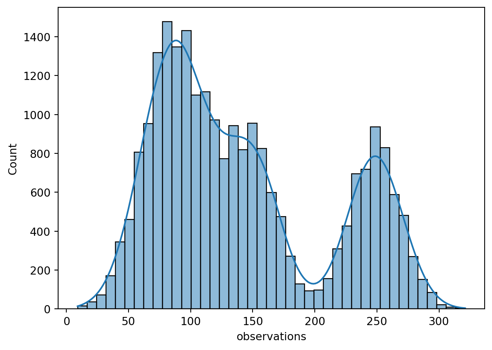
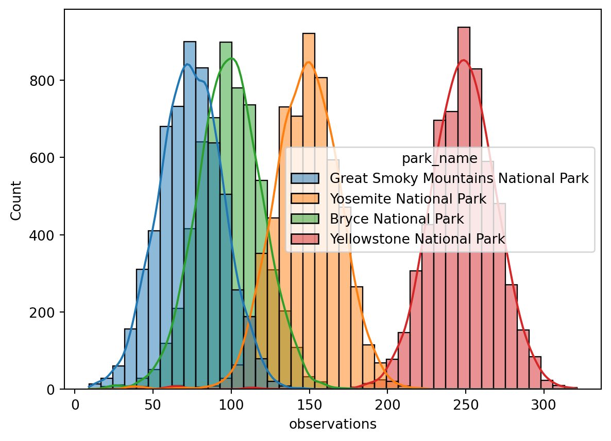
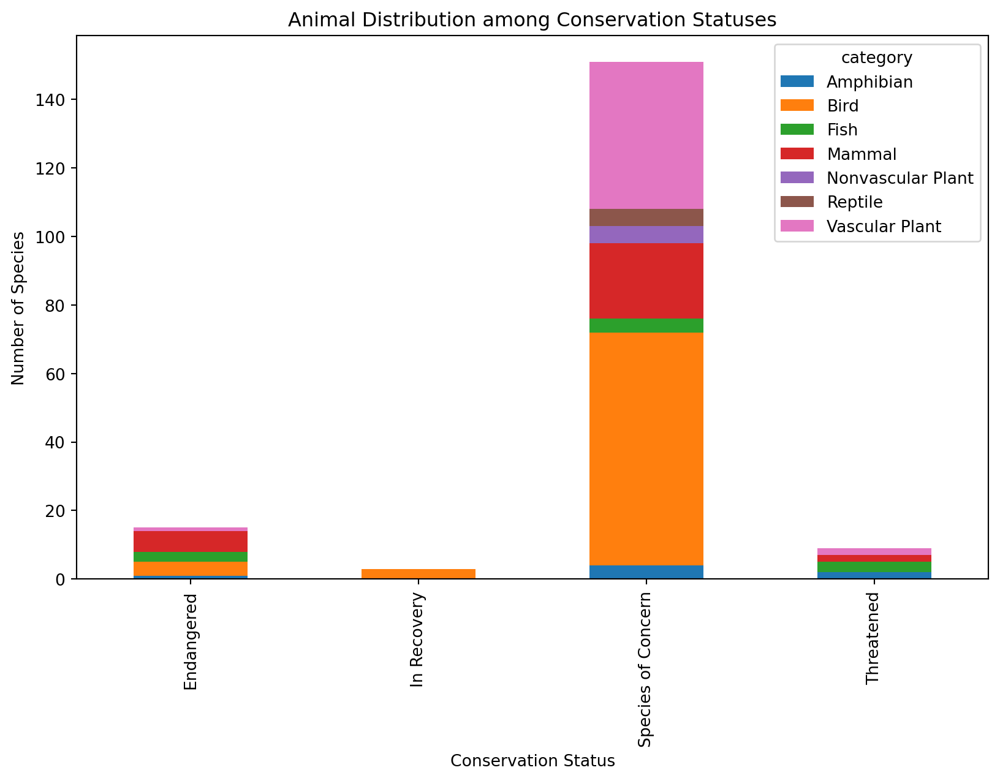
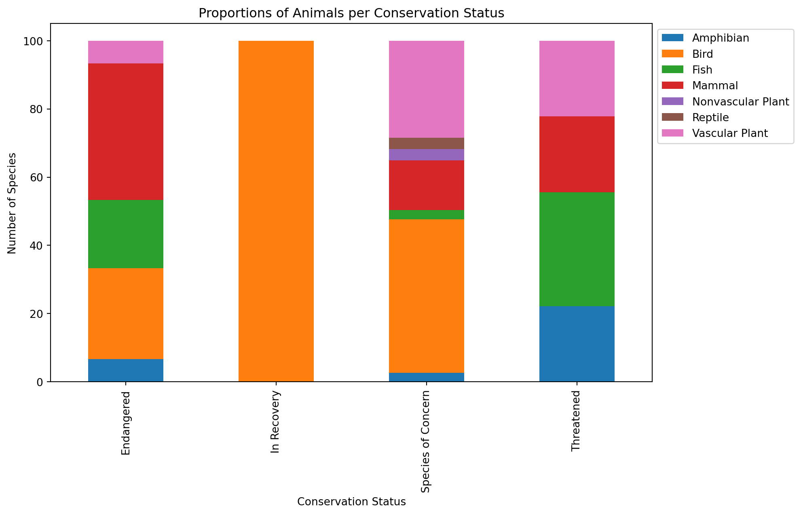
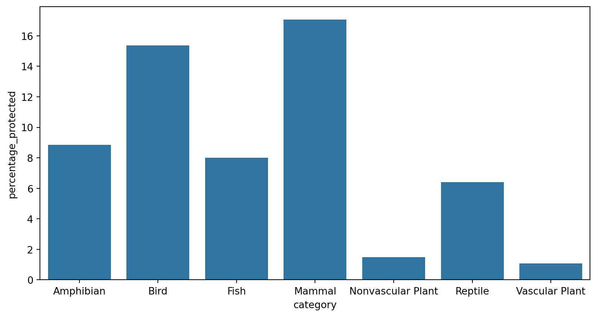
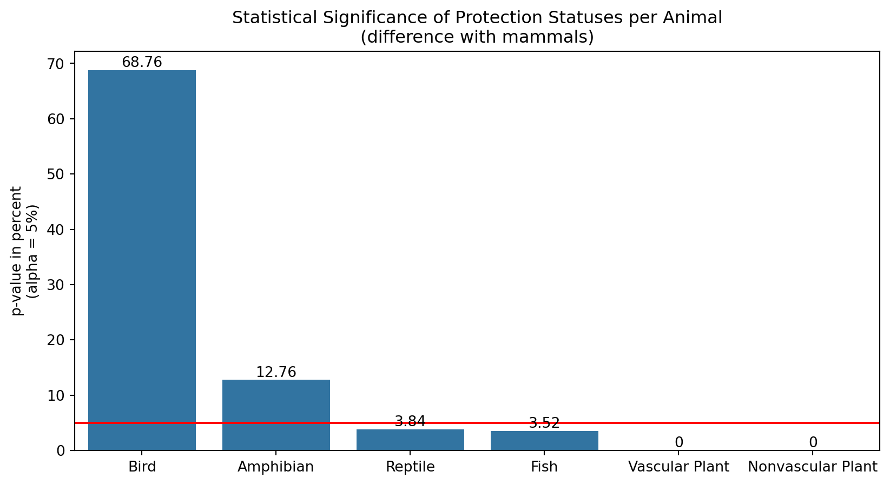

import pandas as pd
import numpy as np
from matplotlib import pyplot as plt
import seaborn as sns
observations = pd.read_csv('observations.csv')
species = pd.read_csv('species_info.csv')Biodiversity, Endangerement and Conversation in Data from National Parks Service
Introduction
This project explores biodiversity data from the National Parks Service about endangered species in various parks. In particular, the project delves into the conservation statuses of endangered species to see if there are any patterns regarding the type of species the become endangered. The goal of this project will be to perform an Exploratory Data Analysis and explain findings from the analysis in a meaningful way.
Sources: Both Observations.csv and Species_info.csv was provided by Codecademy.com.
Project Goals
The project will analyze data from the National Parks Service, with the goal of understanding characteristics about species and their conservations status, and the relationship between those species and the national parks they inhabit.
Some of the questions to be tackled include:
- What is the distribution of conservation status for animals?
- Are certain types of species more likely to be endangered?
- Are the differences between species and their conservation status significant?
- Which species were spotted the most at each park?
Data
The project makes use of two datasets. The first dataset contains data about different species and their conservation statuses. The second dataset holds recorded sightings of different species at several national parks for 7 days.
Analysis
The analysis consists of the use of descriptive statistics and data visualization techniques to understand the data. Some of the key metrics that will be computed include:
- Distribution of conservation statuses
- Amount of intervention per species category
- P-values for animal pairs and conservation statuses
- Number of observations per park and species category
Evaluation
Lastly, the project will revisit its initial goals and summarize the findings using the research questions. This section will also suggest additional questions which may expand on limitations in the current analysis and further guide future analyses on the subject.
Importing Modules and Data from Files
First, we will import the preliminary modules for this project, along with the data from the two separate files provided for this analysis.
Preview the Data
To prepare for our exploratory data analysis, we’ll first conduct an initial preview of the data. This will involve sampling a subset of the data and inspecting its structure and characteristics.
species.csv
Let’s begin by examening the species dataset.
display("SAMPLE OF SPECIES DATASET:")
display(species.sample(5))
display("INFORMATION ABOUT THE SPECIES DATASET:")
display(species.info())'SAMPLE OF SPECIES DATASET:'| category | scientific_name | common_names | conservation_status | |
|---|---|---|---|---|
| 1095 | Vascular Plant | Silene dichotoma | Dichotoma Silene | NaN |
| 3984 | Vascular Plant | Xerophyllum tenax | Common Beargrass | NaN |
| 277 | Bird | Vermivora celata | Orange-Crowned Warbler | NaN |
| 1224 | Vascular Plant | Weigela florida | Weigela | NaN |
| 2034 | Vascular Plant | Carex rosea | A Sedge, Roseate Sedge | NaN |
'INFORMATION ABOUT THE SPECIES DATASET:'<class 'pandas.core.frame.DataFrame'>
RangeIndex: 5824 entries, 0 to 5823
Data columns (total 4 columns):
# Column Non-Null Count Dtype
--- ------ -------------- -----
0 category 5824 non-null object
1 scientific_name 5824 non-null object
2 common_names 5824 non-null object
3 conservation_status 191 non-null object
dtypes: object(4)
memory usage: 182.1+ KBNoneThe species dataset shows 5824 entries with four variables:
- category: taxonomy for each species.
- scientific_name: scientific name of each species.
- common_names: common names of each species.
- conservation_status: species’ conservation status.
Upon inspection with .info(), we observe that the conservation_status column contains 191 non-null entries, indicating a high presence of missing values. While the majority of columns may retain their data type as objects, an argument could be made for converting conservation_status to an ordinal variable. However, due to the presence of incomplete conservation statuses and the ambiguity surrounding the ordinal nature of in recovery, we’ll retain it as an object.
observations.csv
We’ll now move on to the observations dataset.
display("SAMPLE OF SPECIES DATASET:")
display(observations.sample(5))
display("INFORMATION ABOUT THE SPECIES DATASET:")
display(observations.info())'SAMPLE OF SPECIES DATASET:'| scientific_name | park_name | observations | |
|---|---|---|---|
| 1115 | Dryopteris intermedia | Great Smoky Mountains National Park | 87 |
| 21642 | Silene latifolia ssp. alba | Great Smoky Mountains National Park | 64 |
| 1232 | Stephanomeria lactucina | Yellowstone National Park | 281 |
| 18786 | Erigeron lonchophyllus | Yellowstone National Park | 286 |
| 10390 | Lychnis coronaria | Great Smoky Mountains National Park | 87 |
'INFORMATION ABOUT THE SPECIES DATASET:'<class 'pandas.core.frame.DataFrame'>
RangeIndex: 23296 entries, 0 to 23295
Data columns (total 3 columns):
# Column Non-Null Count Dtype
--- ------ -------------- -----
0 scientific_name 23296 non-null object
1 park_name 23296 non-null object
2 observations 23296 non-null int64
dtypes: int64(1), object(2)
memory usage: 546.1+ KBNoneThe observations dataset consists of three columns:
- scientific_name: scientific name of each species.
- park_name: name of the national park species are located in.
- observations: number of observations in the past 7 days.
Based on the information above, the columns don’t show any missing data, and the data types seem to be appropriate for the analysis.
Exploratory Data Analysis
species.csv
Let’s delve deeper into the species dataset to gain insights into its characteristics and identify any anomalies or patterns. We’ll begin by employing a custom function column_eda() to analyze each column:
def column_eda(dataset):
cols = list(dataset.columns)
for col in cols:
print(f'---------------{col}---------------')
print(f'Unique values:', dataset[col].nunique(),
f'Non-null values: {dataset[col].notnull().sum()}',
f'Missing values: {dataset[col].isnull().sum()}\n',
sep='\n')
print(dataset[col].value_counts().head(4))
column_eda(species)---------------category---------------
Unique values:
7
Non-null values: 5824
Missing values: 0
category
Vascular Plant 4470
Bird 521
Nonvascular Plant 333
Mammal 214
Name: count, dtype: int64
---------------scientific_name---------------
Unique values:
5541
Non-null values: 5824
Missing values: 0
scientific_name
Castor canadensis 3
Canis lupus 3
Hypochaeris radicata 3
Columba livia 3
Name: count, dtype: int64
---------------common_names---------------
Unique values:
5504
Non-null values: 5824
Missing values: 0
common_names
Brachythecium Moss 7
Dicranum Moss 7
Panic Grass 6
Bryum Moss 6
Name: count, dtype: int64
---------------conservation_status---------------
Unique values:
4
Non-null values: 191
Missing values: 5633
conservation_status
Species of Concern 161
Endangered 16
Threatened 10
In Recovery 4
Name: count, dtype: int64The function shows there are 7 categories of species, 5541 species, 5504 common names and 4 conservation statuses. From the analysis, several insights emerge:
- Missing Conversation Statuses: the
conservation_statuscolumn exhibits a high number ofnanvalues (5633), which could be interpreted as ‘species of no concern’ or requiring ‘no intervention’.
To address this, we’ll impute the missing values with “No intervention”, expanding the conservation status categories to five.
print('Old conservation status:\n', list(species.conservation_status.unique()))
species.conservation_status = species.conservation_status.fillna('No intervention')
print('New conservation status:\n', list(species.conservation_status.unique()))Old conservation status:
[nan, 'Species of Concern', 'Endangered', 'Threatened', 'In Recovery']
New conservation status:
['No intervention', 'Species of Concern', 'Endangered', 'Threatened', 'In Recovery']- Duplicate Entries: there is a discrepancy between the number of unique values of
scientific_nameandcommon_namesdespite all entries having non-null values. This points to the presence of duplicate common names for different species.
We’ll confirm this by identifying and examining these duplicates.
duplicates = species.duplicated().sum()
print(f'Overall duplicates (rows): {duplicates}')
repeated_scientific_names = species.duplicated(subset=['scientific_name']).sum()
print(f'Duplicated scientific names: {repeated_scientific_names}')
repeated_common_names = species.duplicated(subset=['common_names']).sum()
print(f'Duplicated common names: {repeated_common_names}')Overall duplicates (rows): 0
Duplicated scientific names: 283
Duplicated common names: 320To illustrate, we’ll display the most frequent common name alongside its associated scientific names.
display(species.common_names.value_counts().reset_index()[:5])
display(species.query("common_names == 'Brachythecium Moss'")[['common_names', 'scientific_name']])| common_names | count | |
|---|---|---|
| 0 | Brachythecium Moss | 7 |
| 1 | Dicranum Moss | 7 |
| 2 | Panic Grass | 6 |
| 3 | Bryum Moss | 6 |
| 4 | Sphagnum | 6 |
| common_names | scientific_name | |
|---|---|---|
| 2812 | Brachythecium Moss | Brachythecium digastrum |
| 2813 | Brachythecium Moss | Brachythecium oedipodium |
| 2814 | Brachythecium Moss | Brachythecium oxycladon |
| 2815 | Brachythecium Moss | Brachythecium plumosum |
| 2816 | Brachythecium Moss | Brachythecium rivulare |
| 2817 | Brachythecium Moss | Brachythecium rutabulum |
| 2818 | Brachythecium Moss | Brachythecium salebrosum |
As seen above, the most frequent common name is Brachythecium Moss, with a total of 7 different species identified with this name. Organisms in this example all share the same genus (i.e. brachythecium, a genus of moss), but differ in species, thus the different scientific names.
This demonstrates instances where multiple species share identical common names but differ in scientific nomenclature.
- Duplicate Scientific Names: the presence of duplicate scientific names suggests repeated observations of the same species, since the dataset should report the conservation status of each species, thus one observation per species.
Since there are no overall duplicates in the dataset (see above), these duplicate names must have some difference at the row level. To confirm this, we’ll print out a sample of duplicates and inspect three random duplicates species, to see what kind of differences are there within the rows themselves.
duplicated_species = species[species['scientific_name'].duplicated(keep=False)]
display('-------Sample of duplicated scientific names-------')
display(duplicated_species.head())
def display_duplicated_species(scientific_name):
duplicated_entries = duplicated_species[duplicated_species['scientific_name'] == scientific_name]
display(f'-------Duplicated \'{scientific_name}\'-------')
display(duplicated_entries)
scientific_names_to_check = ['Cervus elaphus', 'Canis lupus', 'Odocoileus virginianus']
for scientific_name in scientific_names_to_check:
display_duplicated_species(scientific_name)'-------Sample of duplicated scientific names-------'| category | scientific_name | common_names | conservation_status | |
|---|---|---|---|---|
| 4 | Mammal | Cervus elaphus | Wapiti Or Elk | No intervention |
| 5 | Mammal | Odocoileus virginianus | White-Tailed Deer | No intervention |
| 6 | Mammal | Sus scrofa | Feral Hog, Wild Pig | No intervention |
| 8 | Mammal | Canis lupus | Gray Wolf | Endangered |
| 10 | Mammal | Urocyon cinereoargenteus | Common Gray Fox, Gray Fox | No intervention |
"-------Duplicated 'Cervus elaphus'-------"| category | scientific_name | common_names | conservation_status | |
|---|---|---|---|---|
| 4 | Mammal | Cervus elaphus | Wapiti Or Elk | No intervention |
| 3017 | Mammal | Cervus elaphus | Rocky Mountain Elk | No intervention |
"-------Duplicated 'Canis lupus'-------"| category | scientific_name | common_names | conservation_status | |
|---|---|---|---|---|
| 8 | Mammal | Canis lupus | Gray Wolf | Endangered |
| 3020 | Mammal | Canis lupus | Gray Wolf, Wolf | In Recovery |
| 4448 | Mammal | Canis lupus | Gray Wolf, Wolf | Endangered |
"-------Duplicated 'Odocoileus virginianus'-------"| category | scientific_name | common_names | conservation_status | |
|---|---|---|---|---|
| 5 | Mammal | Odocoileus virginianus | White-Tailed Deer | No intervention |
| 3019 | Mammal | Odocoileus virginianus | White-Tailed Deer, White-Tailed Deer | No intervention |
It seems that both the number of common names and the types of conservation statuses are different for duplicate observations. That is, the same species exhibits both different common names, as well as conservation statuses. To solve the question of duplicates, given the differences in conversation statuses do not affect our question on the likelihood of endangerment given a species’ protection status, I’ll retain the first instance of these duplicates.
species = species.drop_duplicates(subset=['scientific_name'], keep='first')
repeated_scientific_names = species.scientific_name[species.scientific_name.duplicated()]
print(f'Duplicated scientific names: {len(repeated_scientific_names)}\n')
print('-------Previously duplicated examples (now clean)-------')
scientific_names_to_check = ['Cervus elaphus', 'Canis lupus', 'Odocoileus virginianus']
display(species[species['scientific_name'].isin(scientific_names_to_check)])Duplicated scientific names: 0
-------Previously duplicated examples (now clean)-------| category | scientific_name | common_names | conservation_status | |
|---|---|---|---|---|
| 4 | Mammal | Cervus elaphus | Wapiti Or Elk | No intervention |
| 5 | Mammal | Odocoileus virginianus | White-Tailed Deer | No intervention |
| 8 | Mammal | Canis lupus | Gray Wolf | Endangered |
observations.csv
Let’s extend our exploratory analysis to the observations dataset, mirroring the approach applied to the species dataset. We’ll begin by employing the column_eda() function to analyze each column.
column_eda(observations)---------------scientific_name---------------
Unique values:
5541
Non-null values: 23296
Missing values: 0
scientific_name
Myotis lucifugus 12
Puma concolor 12
Hypochaeris radicata 12
Holcus lanatus 12
Name: count, dtype: int64
---------------park_name---------------
Unique values:
4
Non-null values: 23296
Missing values: 0
park_name
Great Smoky Mountains National Park 5824
Yosemite National Park 5824
Bryce National Park 5824
Yellowstone National Park 5824
Name: count, dtype: int64
---------------observations---------------
Unique values:
304
Non-null values: 23296
Missing values: 0
observations
84 220
85 210
91 206
92 203
Name: count, dtype: int64The column analysis revelas the following insights. There are 23296 observations of 5541 unique species documented in 4 parks. The number of species (scientific_name) in the observations datset coincides with the number of species in the species dataset. This suggest that the observations dataset contains observations of all species in the species dataset. To confirm this, we’ll check if the scientific_name column in the observations dataset is a subset of the scientific_name column in the species dataset.
species_names = species.scientific_name
observations_names = observations.scientific_name
print(f'Is the observations dataset a subset of the species dataset? {observations_names.isin(species_names).all()}')Is the observations dataset a subset of the species dataset? TrueThe result confirms that the observations dataset is a subset of the species dataset, as all species in the observations dataset are also present in the species dataset.
Furthermore, as observations is a numerical variable, its distribution provides insights into the frequency of species sightings. To better explore this column given its data type, I’ll provide here some descriptive statistics on it.
print(observations.observations.describe())
sns.histplot(x='observations', data=observations, kde=True)
plt.show()
display(f'Total number of observations: {observations.observations.sum()} in the past 7 days.')count 23296.000000
mean 142.287904
std 69.890532
min 9.000000
25% 86.000000
50% 124.000000
75% 195.000000
max 321.000000
Name: observations, dtype: float64
'Total number of observations: 3314739 in the past 7 days.'The distribution of in the number of observations seems to follow a multimodal distribution, with at least three discernible peaks in the data: one at 80, another at 150, and a third at 250. This may suggest that the overall distribution is a combination of several distributions, grouped by a certain variable. Given the low number of disceernible peaks, this variable might be the park_name variable. That is: the distribution in the number of observations may be influenced by the size of the parks they were made in.
To confirm this, we’ll plot the distribution of observations per park using the hue parameter in the seaborn histplot function.
sns.histplot(x='observations', data=observations, kde=True, hue='park_name')
plt.show()
As suspected, the distribution of observations is indeed influenced by the park in which they were made. The peaks in the distribution clearly correspond to each of the four parks in the dataset. This proves that the number of observations is influenced by the park in which they were made.
Summary
To encapsulate the insights obtained from our Exploratory Data Analysis (EDA), we present the key characteristics of both datasets.
species
- Dataset Overview: the data comprises 5,824 entries with 4 variables—category, scientific_name, common_names, and conservation_status—offering a diverse array of taxonomic information.
- Missing Values: the conservation_status column contains 5,633 missing values, which were imputed with “No intervention” to account for species not under any conservation status.
- Duplicates: the dataset contains no overall duplicates, but does exhibit duplicate scientific names, which were resolved by retaining the first instance of each duplicate.
- Common Names: the dataset contains 5541 species, with some sharing identical common names but differing in scientific nomenclature.
- Conservation Status: the dataset reports 5 conservation statuses, with most species not under any conservation status.
observations
- Dataset Overview: the data consists of 23,296 entries with 3 variables—scientific_name, park_name, and observations—documenting species sightings in 4 national parks over 7 days.
- Unique Species: the dataset contains observations of 5,541 unique species, all of which are present in the
speciesdataset. - Missing Values: the dataset contains no missing values, with all columns having non-null entries.
- Distribution: the number of observations followed a multimodal distribution, which was influenced by the park in which observations were conducted.
Analysis
For this analysis, I’ll attempt to answer the questions stated above by beginning with the species dataset.
Q: What is the distribution of conservation status for animals?
First, I’ll explore the distribution of animal categories among conservation statuses by grouping the species dataset by both columns and calculating the absolute and relative frequencies by conservation status. Then, I’ll plot them below.
The most endangered animals in the dataset were mammals (6) and birds (4), while the only animal in recovery are birds (3), which could point to the fact that birds are recovering better than other animals.
The distribution of species among categories and conservation statuses is depicted in the following plot.
num_conservation = len(species[species.conservation_status != 'No intervention'])
num_not_conservation = len(species[species.conservation_status == 'No intervention'])
print(f'Total species under protection: {num_conservation}')
print(f'Total species not under protection: {num_not_conservation}')
category_conservation = species[species.conservation_status != 'No intervention']\
.groupby(['conservation_status', 'category'])['scientific_name']\
.count()\
.unstack()\
.replace('nan', np.nan).fillna(0)
display("Absolute frequencies", category_conservation)
ax = category_conservation.plot(kind='bar', figsize=(10,6), stacked = True)
ax.set_xlabel('Conservation Status')
ax.set_ylabel('Number of Species')
plt.title("Animal Distribution among Conservation Statuses")
plt.show()
plt.clf()Total species under protection: 178
Total species not under protection: 5363'Absolute frequencies'| category | Amphibian | Bird | Fish | Mammal | Nonvascular Plant | Reptile | Vascular Plant |
|---|---|---|---|---|---|---|---|
| conservation_status | |||||||
| Endangered | 1.0 | 4.0 | 3.0 | 6.0 | 0.0 | 0.0 | 1.0 |
| In Recovery | 0.0 | 3.0 | 0.0 | 0.0 | 0.0 | 0.0 | 0.0 |
| Species of Concern | 4.0 | 68.0 | 4.0 | 22.0 | 5.0 | 5.0 | 43.0 |
| Threatened | 2.0 | 0.0 | 3.0 | 2.0 | 0.0 | 0.0 | 2.0 |

<Figure size 672x480 with 0 Axes>In addition to that, the relative frequencies per conservation status reveal more information about the distribution of animal categories per status. - Mammals, birds and fish make up more than 85% of all endangered species documented in the species dataset. - More than 70% of species of concern are made up of birds and vascular plants. - As observed before, birds make up 100% of the species in recovery according to the dataset.
These proportions can be clearly visualized in the plot below.
category_conservation_rel = species[species.conservation_status != 'No intervention']\
.groupby(['category', 'conservation_status'])['scientific_name']\
.count()\
.unstack()\
.replace('nan', np.nan).fillna(0)\
.apply(lambda x: (100*x / x.sum()).round(2))\
.transpose()
display("Relative frequencies by category", category_conservation_rel)'Relative frequencies by category'| category | Amphibian | Bird | Fish | Mammal | Nonvascular Plant | Reptile | Vascular Plant |
|---|---|---|---|---|---|---|---|
| conservation_status | |||||||
| Endangered | 6.67 | 26.67 | 20.00 | 40.00 | 0.00 | 0.00 | 6.67 |
| In Recovery | 0.00 | 100.00 | 0.00 | 0.00 | 0.00 | 0.00 | 0.00 |
| Species of Concern | 2.65 | 45.03 | 2.65 | 14.57 | 3.31 | 3.31 | 28.48 |
| Threatened | 22.22 | 0.00 | 33.33 | 22.22 | 0.00 | 0.00 | 22.22 |
axrel = category_conservation_rel.plot(kind='bar', figsize=(10,6), stacked = True)
axrel.set_xlabel('Conservation Status')
axrel.set_ylabel('Number of Species')
axrel.legend(bbox_to_anchor=(1,1), loc = 'upper left')
plt.title("Proportions of Animals per Conservation Status")
plt.show()
plt.clf()
<Figure size 672x480 with 0 Axes>Q: Are certain types of species more likely to be endangered?
The next question concerns the relation between species and their conservation status. To answer this question, I’ll group the conservation statuses into those reflecting some kind of intervention and those without. No intervention will become a marker for risk of endangerment.
After this I’ll group the species categories and calculate the amount protected and not protected.
species['protected'] = species.conservation_status != 'No intervention'
category_protections = species.groupby(['category', 'protected'])\
.scientific_name.nunique()\
.reset_index()\
.pivot_table(columns = 'protected',
index = 'category',
values = 'scientific_name')\
.reset_index()
category_protections.columns = ['category', 'not_protected', 'protected']
category_protections['percentage_protected'] = (category_protections.protected / \
(category_protections.protected + category_protections.not_protected) * 100)\
.round(2)
display(category_protections)| category | not_protected | protected | percentage_protected | |
|---|---|---|---|---|
| 0 | Amphibian | 72.0 | 7.0 | 8.86 |
| 1 | Bird | 413.0 | 75.0 | 15.37 |
| 2 | Fish | 115.0 | 10.0 | 8.00 |
| 3 | Mammal | 146.0 | 30.0 | 17.05 |
| 4 | Nonvascular Plant | 328.0 | 5.0 | 1.50 |
| 5 | Reptile | 73.0 | 5.0 | 6.41 |
| 6 | Vascular Plant | 4216.0 | 46.0 | 1.08 |
With this information, we can now visualize the percentages of protection for each species category. Based on this, mammals and birds display the highest proportion of protection with roughly 17% and 15% under protection, respectively. Thus, these species types are the most likely to be endangered among categories. The bar chart below visualizes the percentages per category.
plt.figure(figsize=(10,5))
sns.barplot(data = category_protections, y = 'percentage_protected', x = 'category')
plt.show()
plt.clf()
<Figure size 672x480 with 0 Axes>Q: Are the differences between species and their conservation status significant?
The question of statistical significance for categorical variables is answered in statistics by use of the chi-square test.
Since crosstabulating both variables would yield a complex result, it’s better to break down the question into pairs of species categories. Since based on the previous question mammals are the most protected category, I’ll compare the significance of other category differences with mammals.
I’ll start by permutating the pairs of categories with mammals. Then I’ll loop over this list to perform the chi-square tests for each pair and plot the p-values to find the statistically significant differences among category pairs.
from scipy.stats import chi2_contingency
# Permutations
categories = list(species.category.unique())
combinations_mammal = [['Mammal', i] for i in categories][1:]
category_protections_part = category_protections.iloc[:, 0:3]
category_protections_part = category_protections_part.set_index('category')
# Significant Differences Data
sign_data = {'Animal Pair': [], 'p-value': []}
for pair in combinations_mammal:
contingency_table = pd.DataFrame({pair[0]: category_protections_part.loc[pair[0]],
pair[1]: category_protections_part.loc[pair[1]]})
chi2, pval, dof, expected = chi2_contingency(contingency_table)
sign_data['Animal Pair'].append(pair[1])
sign_data['p-value'].append((pval*100).round(2))
sign_data = pd.DataFrame(data = sign_data).sort_values('p-value', ascending=False)
display(sign_data)
# Plot
plt.subplots(figsize=(10,5))
ax =sns.barplot(data = sign_data, x = 'Animal Pair', y = 'p-value')
plt.title('Statistical Significance of Protection Statuses per Animal\n(difference with mammals)')
plt.axhline(5, color='red')
ax.set_xlabel("")
ax.set_ylabel('p-value in percent\n(alpha = 5%)')
# plt.xticks(rotation=45)
ax.bar_label(ax.containers[0])
plt.show()| Animal Pair | p-value | |
|---|---|---|
| 0 | Bird | 68.76 |
| 2 | Amphibian | 12.76 |
| 1 | Reptile | 3.84 |
| 3 | Fish | 3.52 |
| 4 | Vascular Plant | 0.00 |
| 5 | Nonvascular Plant | 0.00 |

The above graph illustrates the p-values for the chi-square tests performed for each animal category against mammals. Given an alpha of 5%, the analysis shows that birds and amphibians display no statistically significant differences in their conservations statuses compared to mammals. However, all other categories such as reptiles, fishes and plants show statistically significant differences in their conservation statuses when comapred to mammals.
Q: Which species were spotted the most at each park?
This final section will concern the second dataset, observations, to quantify the amount of observations per species in each of the parks listed.
Since the dataset doesn’t include common names, I’ll use the species dataset to merge these names into the observations dataset. Then, I’ll group the data by park and by species/common names, and sum their observations to rank the most spoted species per park.
merged_df = observations.merge(species[['category', 'scientific_name', 'common_names']], how='left')
merged_df = merged_df.drop_duplicates()
merged_df_grouped = merged_df.groupby(['park_name', 'scientific_name', 'common_names', 'category']).observations\
.sum().sort_values(ascending=False)\
.reset_index()
display(merged_df_grouped.head())| park_name | scientific_name | common_names | category | observations | |
|---|---|---|---|---|---|
| 0 | Yellowstone National Park | Holcus lanatus | Common Velvet Grass, Velvetgrass | Vascular Plant | 805 |
| 1 | Yellowstone National Park | Puma concolor | Panther (Mountain Lion) | Mammal | 753 |
| 2 | Yellowstone National Park | Procyon lotor | Common Raccoon, Raccoon | Mammal | 745 |
| 3 | Yellowstone National Park | Hypochaeris radicata | Cat's Ear, Spotted Cat's-Ear | Vascular Plant | 726 |
| 4 | Yellowstone National Park | Columba livia | Rock Dove | Bird | 722 |
The previous table shows the number of observations for each species, grouped by park. To answer the question above, I’ll create a table with the max value of observations per park, to show the species that was most spotted in each of the parks.
merged_df_grouped_max = merged_df_grouped.loc[merged_df_grouped\
.groupby(['park_name'])\
['observations'].idxmax()]\
.sort_values(by = 'observations', ascending=False)
display(merged_df_grouped_max)| park_name | scientific_name | common_names | category | observations | |
|---|---|---|---|---|---|
| 0 | Yellowstone National Park | Holcus lanatus | Common Velvet Grass, Velvetgrass | Vascular Plant | 805 |
| 112 | Yosemite National Park | Hypochaeris radicata | Cat's Ear, Spotted Cat's-Ear | Vascular Plant | 505 |
| 298 | Bryce National Park | Columba livia | Rock Dove | Bird | 339 |
| 2402 | Great Smoky Mountains National Park | Streptopelia decaocto | Eurasian Collared-Dove | Bird | 256 |
Conclusions
This project successfully answered the question stated at the beginning of this report, regarding the distribution of species and their conservation statuses among the four parks. To better explain the data, different visualizations were used to depict the conclusions to be drawn from the analysis.
Below is a summary of the answers to the questions posed at the start of the report:
- What is the distribution of conservation status for species?
- 5363 species are not protected under some conservation status. Of the remaining 178, most species are under the status of species of concern, especially birds and vascular plants.
- Are certain types of species more likely to be endangered?
- Mammals and birds have the highest proportion of protection, revealing their higher risk of endangerement compared to the other categories.
- Are the differences between species and their conservation status significant?
- In a comparisson with mammals, species such as amphibians, reptiles, fishes, and plants showed statistically significant differences in conservation proportion. Birds however did not exhibit a significant difference.
- Which animal is most prevalent and what is their distribution amongst parks?
- The most common species recorded was the common velvet grass, a vascular plant, in Yellowstome National Park, while the Dove was the most commonly observed species both in Bryce and Great Smoky Mountains National Parks. In Yosemite the most observed species was the cat’s ear plant.